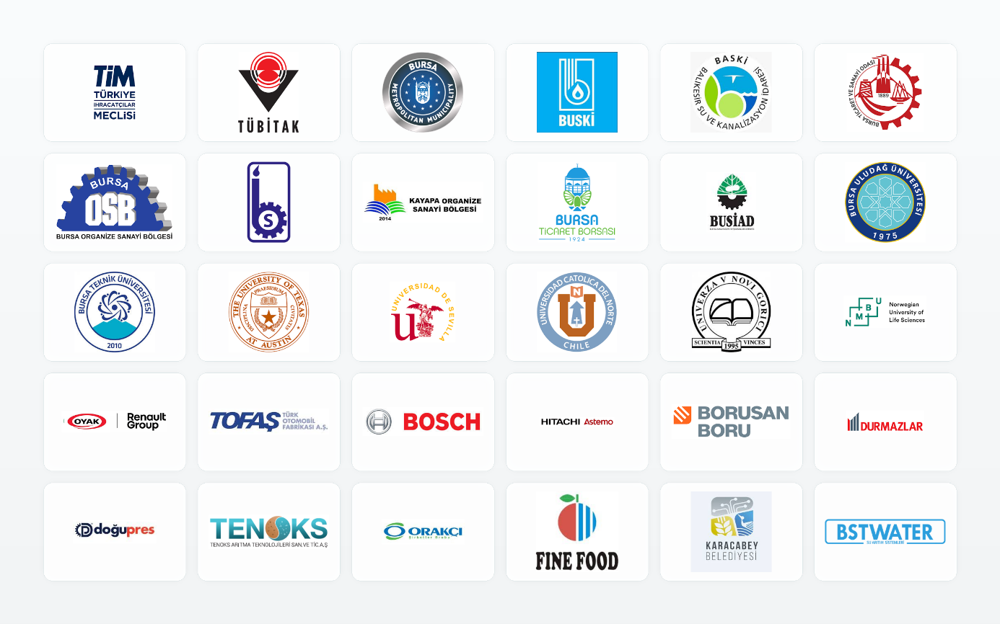

Kamu, sanayi ve akademi kurumlarından oluşan güçlü ve çeşitli iş birliği ağı.

Belediyeler, kamu idareleri, ticaret ve sanayi kuruluşları ile sürdürülen iş birlikleri.
Otomotiv, makine, gıda ve teknoloji sektörlerinden lider kuruluşlarla yürütülen projeler.
Ulusal ve uluslararası üniversitelerle yürütülen ortak araştırma ve eğitim projeleri.